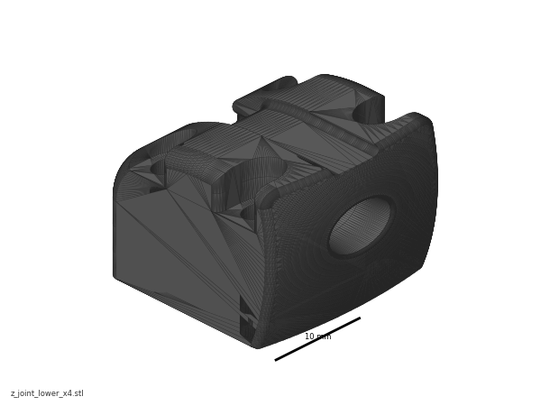
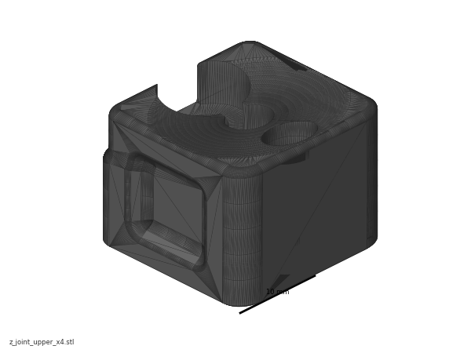
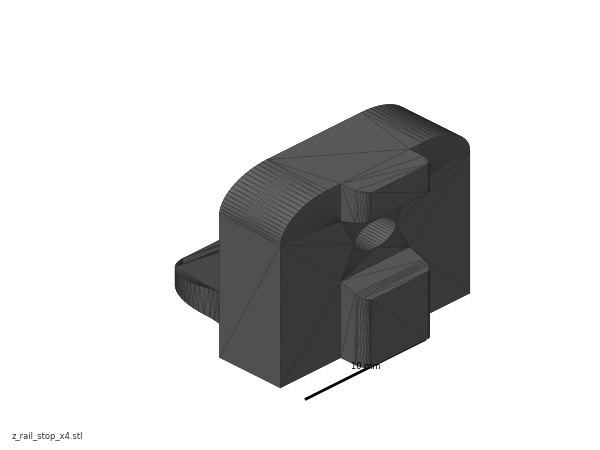

Before you start Chapter 06¶
Before you start · Chapter 06 — Z axis (and Chapter 06b — Gantry squaring)
Hangs the finished gantry on the four Z joints, belts all four Z corners, and gets the gantry roughly square to the frame — after which the machine can move in Z. Part B (Ch 06b) is the real gantry squaring and cannot be done here: it needs motor control, so it runs out of the middle of Chapter 13 (Step 13.34), cold; the hot lock-in is Ch 14's.
What you're building in this chapter. Four Z joints — one at each corner of the gantry — and the four Z belts that hang the gantry from them. A Z joint is a pair of printed blocks: the z_joint_lower bolts to the ball-bearing carriage riding the Z rail on an upright, the z_joint_upper bolts under the gantry's XY joint and clamps both ends of that corner's Z belt, and one M5×40 bolt joins the two. Each corner's belt runs from that joint down to the Z drive at the bottom of the upright, around its pulley, up to the Z idler at the top, and back to the joint — so turning one drive raises one corner, and four of them together lift and level the gantry. Part A gets all of that built, the gantry lifted into the frame, and the machine roughly square. Part B is the real squaring, and it needs a running printer, so it runs from inside Ch 13 (Step 13.34) — cold and with the machine open. The heat soak and the hot lock-in follow in Ch 14, once the panels are on.
Time: 3.5–5.0 h hands-on for Part A, first build (survey §7.2). Part B adds ~1 h hands-on, cold (the heat soak and hot lock-in now live in Ch 14).
Sessions: 9 × ~30 min (first-build estimate — 8 in Part A, 1 in Part B, which is deliberately unbroken; each Pause: line carries its own segment minutes).
Prerequisites:
- Ch 02 — Z drives, Z idlers, Z rails, deck. Four Z drives built and bolted in, four Z idlers at the tops of the uprights, four MGN9 Z rails on the uprights with their carriages on, 16T/20T pulley stack verified, set screws threadlocked (survey §5.2 W12). The deck panel is in.
- Ch 05 — Gantry. Complete gantry: X and Y extrusions, XY joints, X carriage, titanium backers already fitted (survey §5.2 W2 — backers after this point means a teardown). Left off the printer, as the manual leaves it at p.106–107.
- Print batch B05 — Z joints + Z chain (
docs/voron-print-plan.md§3 B05). Black ASA, 1 plate, 6.4 h. - Print batch B02 — the single orange accent session, which carries the four Z belt clips (both halves) and the Z chain retainer brackets.
- Heat-set inserts already done for every part in both batches (survey §5.2 W3).
Tools
- Hex 2.5 mm, 3 mm and 4 mm; a ball-end 4 mm helps at the Z joints
- Hex 2 mm and 2.5 mm for Part B
- Two people for the gantry lift (survey §7.3, chapter 06 row) — Alex on one side, daughter on the other
- Four rubber rail stoppers taken off the Z rails (the LDO trick, below), or long zip ties as the fallback
- Needle-nose pliers or tweezers for belt routing (manual p.118)
- Steel rule / tape for cutting belt; flush cutters
- Part B only: 150 mm machinist square (DIN 875/2), digital caliper, 150 mm rule, phone with Spectroid (Android) / Sound Spectrum Analysis (iOS) / Gates Carbon Drive
Consumables: small zip ties ×4 (belt tails), long zip ties ×4 (only if you skip the rail-stopper trick), masking tape and marker.
Printed parts
Parts arrive in the bins named below (see the bin map in print/README.md#bins); check the bin label's list before you start.
| Looks like | STL | Bin | Repo path | Qty | Colour | Batch |
|---|---|---|---|---|---|---|
 |
z_joint_lower_x4.stl |
06-Z-joints | Voron-2 STLs/Gantry/Z_Joints/ |
4 | Black | B05 |
 |
z_joint_upper_x4.stl |
06-Z-joints | Voron-2 STLs/Gantry/Z_Joints/ |
4 | Black | B05 |
 |
[a]_z_belt_clip_lower_x4.stl |
06-Z-joints | Voron-2 STLs/Gantry/ |
4 | Orange | B02 |
 |
[a]_z_belt_clip_upper_x4.stl |
06-Z-joints | Voron-2 STLs/Gantry/ |
4 | Orange | B02 |
 |
z_chain_bottom_anchor.stl |
10-chains | Voron-2 STLs/Gantry/ |
1 | Black | B05 — fitted in Ch 10 (manual p.201–203) |
 |
z_chain_guide.stl |
10-chains | Voron-2 STLs/Gantry/ |
1 | Black | B05 — fitted in Ch 10 (manual p.201–203) |
 |
[a]_z_chain_retainer_bracket_x2.stl |
10-chains | Voron-2 STLs/Gantry/AB_Drive_Units/ |
2 | Orange | B02 — fitted in Ch 10 (manual p.204) |
 |
z_rail_stop_x4.stl |
06-Z-joints | LDOVoron2 STLs/ |
4 | Black | B05 — optional rail-end safety stop |
| — | z_joint_upper_hall_effect.stl |
— | Voron-2 STLs/Gantry/Z_Joints/ |
0 | — | SKIP per LDO — no hall-effect endstops in this kit, not printed |
{kind=link}
{kind=link}
{kind=link}
Hardware (chapter totals — Part A)
| Fastener / part | Qty | Note |
|---|---|---|
| M5 hex nut | 4 | one per Z bearing block, manual p.110 |
| M3×30 SHCS | 4 | one per corner; passes through top clip → block → lower clip → XY joint, p.111 |
| M5×30 BHCS | 4 | one per corner, same stack, p.111 |
| M3×20 SHCS | 16 | four per z_joint_lower into the MGN9 carriage, p.115 |
| M5×40 SHCS | 4 | one per Z joint, up from the lower joint into the block's M5 nut, p.115 |
| Gates open belt, 2GT, 9 mm | 4 × ~1400 mm (manual minimum ≥1200 mm) | manual p.111 minimum for the 350; the kit ships 6 m of 9 mm belt, so 4 × 1400 mm leaves ~400 mm spare for a mis-cut (LDO 350 Rev D BOM) |
| 6×3 mm magnet | 0 | hall-effect option only — not used |
| Zip tie, 3×150 mm (belt tails) | 4 | manual p.120 |
| Zip tie, long (gantry support) | 0–4 | only if you skip the rubber-rail-stopper trick |
| Rubber rail stopper | 4 | taken off the Z rails and re-fitted mid-rail — LDO note p.114–116 |
Read first
- Do manual p.115–116 before p.114. LDO: "We recommend completing steps on page 115-116 then use the rubber rail stopper under the Z joints mid rail. This will allow you to set the Gantry on page 114 on the joints without the need for long zipties." Fit the four lower Z joints and park them at a known height first, then lower the gantry onto them. src
- Ignore every hall-effect option on p.110 and p.113. LDO note p.145: "SKIP The kit does not use hall effect endstops." Four plain
z_joint_upper_x4, no 6×3 magnets, noz_joint_upper_hall_effect.stl. The XY endstop on this kit is the D2F PCB pod fitted in Ch 05. src - The gantry lift is a two-person step and the manual says so (p.114: "An extra pair of hands helps with this step"). Nobody holds a 350 gantry one-handed while fishing for an M5×40.
- The gantry alignment on p.122 is not the gantry squaring. p.122 gets the gantry square enough to belt. The real procedure (Part B) starts by fully releasing A/B belt tension and dropping the lower Z joints, so it has to come after firmware is up. Ch 07's A/B tension is provisional, and so is Part B's (survey §5.2 W1, §4.4 #2). A/B tension is set three times on purpose: Ch 07 (provisional — enough to home and QGL), Ch 06b Step 06b.15 (provisional again, after squaring, machine cold and open) and Ch 14 Step 14.4 (final — panels on, machine cold, door open, immediately before the closed-chamber soak and hot Z-joint tighten of Step 14.6). Z belts: Ch 06b Step 06b.3 (so QGL converges for squaring), set for the last time at Ch 14 Step 14.5, in the same cold session.
- Belt tension targets: Z belts 140 Hz over a 150 mm span measured from the Z idler centres; A/B belts 110 Hz over a 150 mm span. Both from docs.vorondesign.com. voronldo.com's 80–100 Hz (A/B) and 110–130 Hz (Z) numbers are discarded — survey §4.3.
- A Z carriage that runs off the end of its rail is a ruined carriage. The balls fall out. Keep the printed
z_rail_stop_x4(batch B05) at the top of each rail, or keep a hand on the carriage.
Sources for this chapter:
- Voron 2.4r2 assembly manual, p.108–123 — the page sequence Part A transcribes, pinned at commit
de7e89d - Voron docs § V2 Gantry Squaring — the 17 numbered steps Part B transcribes, and the source of Part B's 15 mirrored images (GPL-3.0)
- Ellis' Print Tuning Guide § V2 gantry squaring — the same procedure, in Ellis' words
- Voron docs § Secondary printer tuning — the 140 Hz Z and 110 Hz A/B belt targets
- LDO Build Notes § Voron 2.4 build FAQ — p.115–116-before-p.114 ordering, hall-effect skips
- LDO cable-chain guide — Z chain, fitted later in Ch 10
- Voron forum — de-racking thread and Nero3D's de-racking video — the de-racking method Voron's step 12 delegates to
Video coverage (Steve Builds, pre-release LDO kit — differs from Rev D+): Part 4 @0:12:41 (+18m), Part 4 @0:55:52 (+32m), Part 4 @1:30:00 (+14m), Part 5 @0:46:00 (+14m), Part 5 @1:03:16 (+10m), Part 6 @1:34:40 (+2m), Part 9 @2:49:00 (+5m)